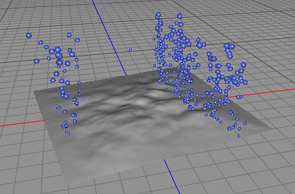

|
The Particle Emitter object is a dynamic particle system. It can be used to create all kind of particle effects like rain, explosions, waterfalls, springs, etc. Hereby the Particle-Emitter works closely with the Force Effectors which apply various types of forces to the particles like gravity or drag. Together with the effectors the particle emitter offers almost unlimited possibilities.

A Mesh Emitter whose emission is limited to a polygon selection.
Properties
- Birth rate: Number of particles emitted per second.
- Start time: The time when particle emission starts.
- End time: Particle emission stops at this time.
- Emitter shape: There are the following particle emitter-types available:
- Rect: The particles are emitted from a rect-shape into the -Z direction.
- Disc: The particles are emitted from a disc-shape into the -Z direction.
- Omni: The particles are emitted uniformly into all directions.
- Spline: The particles are emitted along a spline object. For this emitter you have to attach a spline object to the Object property.
- Mesh: The particles are emitted uniformly from a mesh. For this emitter you have to attach a polygon object to the Object property. The mesh emitter can be constraint to a polygon selection with the Polygon selection property.
- Width: Width of the rect and disc emitters.
- Height: Height of the rect and disc emitters.
- Divergence: The particles don't fly straight away from the emitter but have a random divergence.
- Object: The emitter source object. For a mesh emitter attach a polygon object and for a spline emitter attach a spline object. But you can also use a folder when you want to reposition a rect emitter. Then the center of the folder will be used as the center of the rect emitter
- Polygon selection: Constrain a mesh emitter to a certain polygon selection.
- Speed: The speed of the emitted particles in the particle systems local coordinate system.
- Speed Variation: The random speed variation of the emitted particles in the particle systems local coordinate system.
- Size growth: The rate at which a particle volume growth.
- Size growth variation: Adds a random effect to the size growth.
- Life time: The life time of a particle. If a particle is older than life time the particle gets killed by the particle system and disappears.
- Life time variation: Randomizes the life time.
|